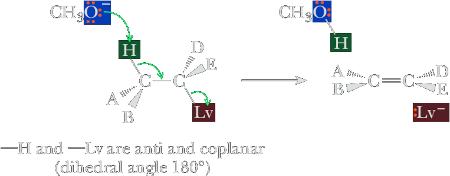
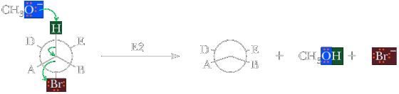
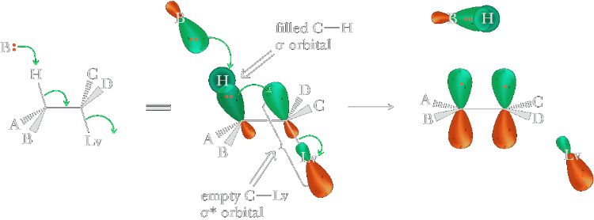
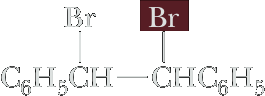
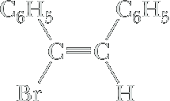
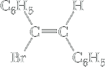
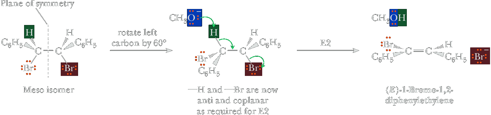
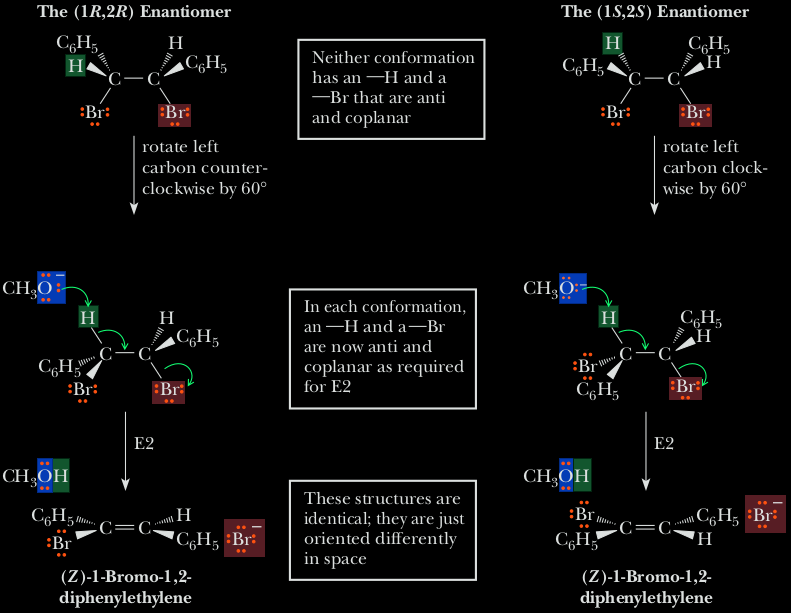

The E2 reaction
The E2 reaction (for elimination, bimolecular) occurs when an alkyl halide is treated with a strong base, such as hydroxide ion or alkoxide ion (RO−). It is the most commonly occurring pathway for elimination and can be formulated as shown in Figure 1.
Like the SN2 reaction, the E2 reaction takes place in one step without intermediates. As the base begins to abstract H+ from a carbon next to the leaving group, the C−H bond begins to break, a C=C bond begins to form, and the leav ing group begins to depart, taking with it the electron pair from the C − X bond. Among the pieces of evidence supporting this mechanism is that E2 reactions show second-order kinetics and follow the rate law: rate = k x [RX] x [Base]. That is, both base and alkyl halide take part in the rate-limiting step.
A second piece of evidence in support of the E2 mechanism is provided by a phenomenon known as the deuterium isotope effect. For reasons that we won’t go into, a carbon–hydrogen bond is weaker by about 5 kJ/mol (1.2 kcal/mol) than the corresponding carbon–deuterium bond. Thus, a C−H bond is more easily broken than an equivalent C − D bond, and the rate of C −H bond cleavage is faster. For instance, the base-induced elimination of HBr from 1-bromo-2-phenylethane proceeds 7.11 times as fast as the corresponding elimination of DBr from 1-bromo-2,2-dideuterio-2-phenylethane. This result tells us that the C−H (or C−D) bond is broken in the rate-limiting step, consistent with our picture of the E2 reaction as a one-step process. If it were otherwise, we couldn’t measure a rate difference.
(D)—Slower reaction
Stereoselectivity
Yet a third piece of mechanistic evidence involves the stereochemistry of E2 eliminations. The stereochemistry of E2 reactions is controlled by a conformational effect. The lowest-energy transition state of an E2 reaction is commonly the one in which the −Lv and −H are oriented anti and coplanar (at a dihedral angle of 180°) to each other. The reason for this preferred geometry is that it allows for proper orbital overlap between the base, the proton being removed, and the departing leaving group. Remembering the anti and coplanar geometry requirement is important b ecause it allows prediction of alkene stereochemistry in E2 reactions, namely whether E or Z products are produced.
This is shown more clearly in a Newman projection with a bromide as the leaving group.
As with the required backside attack associated with an SN2 reaction, there is an orbital-based reason for the anti and coplanar arrangement of the —H and −Lv involved in an E2 reaction. The following diagram shows a filled C−H s bonding molecular orbital aligned with the empty C−Lv s antibonding molecular orbital.
As the strong base removes the proton, we consider the two electrons in the C−H orbital filling the antibonding C−Lv orbital and thereby breaking the C−Lv bond. An anti and coplanar arrangement of the C!H and C−Lv leads to proper phasing in the resulting π bond.
For example, treatment of 1,2-dibromo-1,2-diphenylethane with sodium methoxide in methanol gives 1-bromo-1,2-diphenylethylene. The meso isomer of 1,2-dibromo-1,2-diphenylethane gives (E )-1-bromo-1,2-diphenylethylene, whereas the racemic mixture of 1,2-dibromo-1,2-diphenylethane gives (Z )-1-bromo-1,2-diphenylethylene.
|  meso-1,2-Dibromo-1,2-diphenylethane | + | CH3O−Na+ | E2 ⟶ CH3OH |  (E)-1-Bromo-1,2-diphenylethylene | + | CH3OH | + | Na+Br− |
racemic-1,2-Dibromo-1,2-diphenylethane | + | CH3O−Na+ | E2 ⟶ CH3OH | (Z)-1-Bromo-1,2-diphenylethylene | + | CH3OH | + | Na+Br− |
E2 Reaction of meso-1,2-Dibromo-1,2-diphenylethane
E2 Reaction of the Enantiomers
| Alkyl Halide | E1 | E2 |
|---|---|---|
| Primary RCH2X | E1 is not observed. Primary carbocations are so unstable that they are never observed in solution. | E2 is favored if elimination is observed. Usually requires sterically hindered strong base. |
| Secondary R2CHX | Main reaction with weak bases such as H2O and ROH. | Main reaction with strong bases such as OH− and OR−. |
| Tertiary R3CX | Main reaction with weak bases such as H2O and ROH. | Main reaction with strong bases such as OH− and OR−. |